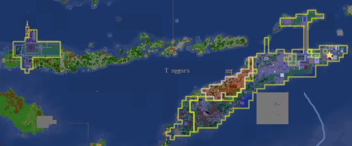

timor(ティモール)について
timorの場所や住民について
首都は東南アジアにあるティモール島の東ティモールにあり、西ティモールやhua(実際のコモド国立公園付近)などの街もtimorに所属しています。
timorでは日本人限定で国を作っています。
役職
【国王】seychelles4567
【左宰相】DAIPAN_mp4
【右宰相】kasuya3007441410
【財務大臣】kasuya3007441410 兼任
【外務大臣】shamo0729
【総務大臣】White_slope
【内務大臣 土地＋経済担当】Ruchi17,himitsukichi10
【技術産業大臣】CE_take
【軍総司令】clover625
【特殊部隊】長官:humisan7626,副長官:siiart
【国家アドバイザー】SEKOUPEN,thejun0218
国民
mitsudomedayo, kasuya3007441410, mochi_mp3, Ruchi17, Zs3k, seychelles4567, White_slope, CE_take, wel14, kazu0215111, ymut, kiranattou0025, younohe, clover625, zashian, taro9863, SotoSoto2, shamo0729, yu_zzy830, Kuu1006, seisei0314, HARUKURA1101, REI_Zeke, thejun0218, kou_21, Haruharu1245, soda9017, nazononiku, himitsukichi10, tougarasi, Green_Tea_syrup, siiart, humisan7626, hetochannel, ___kageyama___, SmartCoronet850, Ray_0000, moimoimoimoido, asparagus495, miya292
合計40名(2022/1/2現在)
主要メンバー
・seychelles4567
現在の国王。
みっつーさんが総督の時は外相として活躍していた。
・White_slope
大規模な植林場作った。
お金持ち。
・DAIPAN_mp4
建築勢。
建国メンバーで宰相をしている。
・clover625
ネルフの建築をした。
軍曹司令。
・kasuya3007441410
ポーションを作って無料配布などをしている。
・Ruchi17
土地の管理などをしている。
公式youtubeチャンネルの制作・管理をしている。
・himitsukichi10
西ティモールの領主。
魂魄 妖夢の「みょん」で有名。
・CE_take
回路勢で効率の良いかまどを作成、鉄道を建設した。
現在もかまどのメンテナンスや兵器の開発をしている。
・humisan7626
あむさんとペアでhuaを建設した。
特殊部隊隊長で対外工作をしている。
・siiart
回路勢でふみさんとペアでhuaを建設した現在のhua領主。
当webサイトの制作・管理をしている。
・yu_zzy830
thiriのshopで幸運ツルハシやシルクタッチツルハシを1gで販売していた。
雑談でよく居る。
地図
